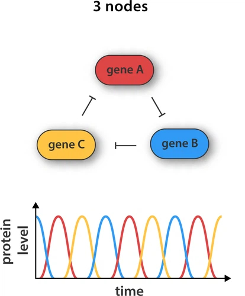

Biological computers
One of the most interesting experiences during my Master's in Biotechnology at ETH Zurich's D-BSSE was the course "Introduction to biological computers" held by Prof. Kobi Benenson.
First of all: In my opinion, Kobi is an amazing teacher - a lot of the lecture is him throwing out problems with no prepared answer and then going through the process of solving them in class.
This effectively does not teach facts - it teaches how to think. And I believe this is how a M.Sc. should be tought. The students understand biology and how to read papers to find information -
however, learning to think from great scientists is a unique opportunity. Kobi does a great job in this, and one of the new aspects of his style of thinking for me was, how numerical he approaches biology.
He has numbers for all different molecules in a cell memorized, allowing him to conduct back-of-the-envelope calculations to estimate biological behaviour and potential issues. Pretty cool stuff!
But here I want to mention a different aspect of the lecture that also impressed me: The topics covered in the first lectures. Here they are:
State machines, Finite automata, Turing machines, Logic circuits, ... - No biology.
Most students were confused by this, but in retrospect it makes total sense - if you cannot define computation, how can you build a biological computer?
Later on we covered how to build these systems using biological regulators of gene expression, DNA hybridization and competing molecules - awesome stuff!
Turns out it was quite hard to grasp these concepts in the biological context, as they are pretty disconnected from what I had previously learned and the biological implementations are dependent on a lot of finetuning.
More recently I started teaching myself some electrical engineering basics using a breadboard and some textbooks. The same concepts like logic gates, oscillators, switches, etc. came up,
but with one big difference: I can just grab a few transistors and LED's and build these systems - implementing them and trying out variations to see their impact.
This is basically an instant test of whether my theoretical understanding is flawed (as the LEDs will not light up the way I expect them to).
This story really shows one big flaw of synthetic biology: Building is much more limited and this sucks! Here is an example of what I mean:
Building an oscillator
An oscillator is a device that periodically changes states. There has been a bunch of synbio papers describing how to build an oscillator, with the basic idea being mutually respressing genes. Imagine 3 genes (G1, G2, G3) in a cell, encoding separate repressors. G1 represses G2, G2 represses G3, G3 represses G1. This leads to oscillating repressions with three distinct states as shown in the following figure from an article by Rosier and Greef:

Different implementations have been described - with more advanced approaches offering a higher degree of control of amplitude and period. In general, the following steps are necessary for most synthetic biology efforts:
- Orthagonal components need to be identified and tested (no interference with endogenous processes)
- The dynamic range is optimized (e.g. by modifying upstream and downstream sequences like promoters, or even by selected evolution)
- All systems need to be stably expressed in the target cell at the right levels

While computational modelling enables simulations of such systems before building it, this still is a tremendous effort and a lot of finetuning needs to be conducted for
something to actually work in the context of biological systems that are inherently noisy. Now we look at oscillators in electrical engineering. Here is one I built within less than 20 minutes:
Here's the build itself in higher resolution:
If it's not clear what is going on there, I would recommend watching this video by HackMakeMod.
It not only explains nicely how an oscillator works, but also gives you the necessary background about transistors if electrical engineering is not your thing.
They also publish the diagrams on their website, so here is the build:
So this goes to show how much easier it is to implement such a system in wiring instead of biological systems. Here I will continue writing about:
- chemical wires
- intrinsic disorder and competition
- different temporal scales
- concentrations in cells
- equipment
- security
NOTES
- Professional Restrictions: Need for specialized lab equipment, regulatory hurdles
- Resource Intensive: High costs of materials and dependence on institutional support
- Time-Consuming Processes: Long experimentation cycles
- Limited DIY Opportunities: Safety risks prevent home experiments
Discovering Electrical Engineering
- Initial Spark: Exposure to maker spaces and curiosity about devices
- First Projects: Building circuits and experimenting with Arduino
- Role of 3D Printing: Creating physical components for projects
... Additional content here ...